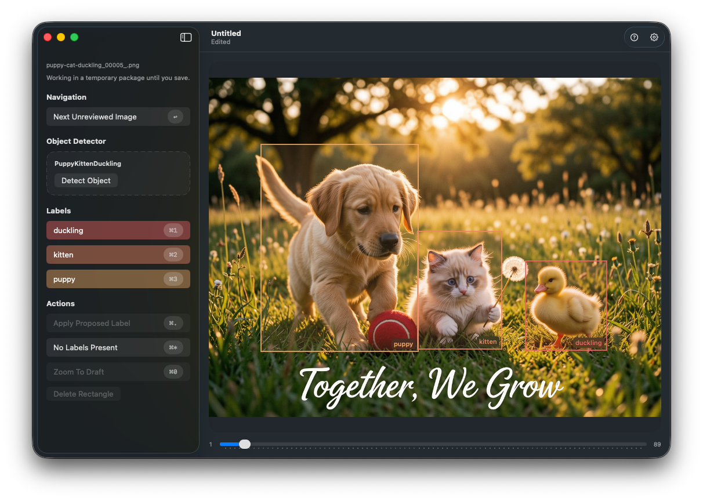

Detector-first review
Load an optional object detector, inspect proposed rectangles, and walk through them with the keyboard before turning them into saved annotations.
macOS image labeling
Image ML Annotator helps you turn raw image folders into structured training data. Bring your own Core ML detector, step through proposed rectangles, and promote the ones you want into real annotations.
Current example workflow uses the PuppyKittenDuckling object detector, but you can use whatever you want – or train your own with Create ML.
Image ML Annotator

What it does
Load an optional object detector, inspect proposed rectangles, and walk through them with the keyboard before turning them into saved annotations.
Draw, move, resize, relabel, or delete rectangles directly on the image. User-drawn proposals stay visually distinct from detector proposals.
Export annotated images plus annotations.json into a clean folder
layout for Create ML image object annotation workflows. You can also merge export
into an existing exported directory to extend a corpus.
Example Workflow
Get Image ML Annotator from the Apple macOS App Store.
Download SampleWorkflow.zip, unzip it on your Mac, and open the included Image ML Annotator document to inspect the training set that produced the PuppyKittenDuckling detector.
Make a new Image ML Annotator document, then drop the
PuppyKittenDuckling .mlmodel into the detector well so it can propose
rectangles for you. Import the Untrained Images to see how the detector
will suggest labeling.
Use detector proposals as a starting point. Press Tab to cycle through proposed rectangles and Delete to discard one you do not want.
Press a label key to promote a proposal into a saved annotation, or draw a new violet proposal rectangle when the detector misses something.
Export the finished annotations into a fresh folder, or "Export Into…" an existing training folder to extend it, then point Create ML at the training folder and make a new object detector.
Made for practical labeling